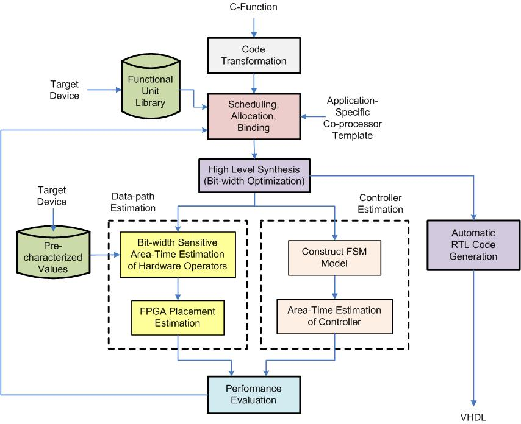

Our Projects


Motivation
Field Programmable Gate Arrays (FPGAs) are increasingly being adopted in embedded systems due to their ability to meet the technological and market uncertainties. Modern FPGA architectures incorporate a multitude of Intellectual Property cores that include soft and hard processors. The additional processing options that are available on FPGAs have increased the complexity of design space explorations, which have become unmanageable in traditional design methodologies especially for large applications. System-level design methodologies are expected to play a central role in the design success of current and future embedded products.
One of the key tasks in modern system-level design is to automatically generate/recommend suitable hardware-software components that meet the conflicting design constraints (cost, performance, power, time) in embedded systems. In order to identify suitable candidates for hardware realization, it is necessary to predict the quantitative outcome of mapping the application portions to hardware.
While high-level estimation has been employed in most of the commercial Application Specific Integrated Circuit (ASIC) based Electronic Design Automation (EDA) tools, accurate high level estimation of FPGA-based implementation remains a challenging research area. Till date, the most widely used FPGA-based design tools do not incorporate high-level estimation. The ability to achieve good estimation results for FPGA-based architectures is mainly hampered by the difficulty in predicting: 1) the effects of logic synthesis in FPGA tools for mapping the application code to the fine-grained programmable logic blocks, and 2) the post place and route interconnect delay. Existing works often lead to unreliable results as they do not consider the combined effects of logic synthesis and physical implementation during high-level estimation.
Research Objective
This research aims to develop a design exploration framework that can rapidly generate custom co-processor structures for FPGAs from C functions. In particular, the design exploration framework must incorporate efficient high-level area-time estimation that can accurately predict the quantitative outcome of mapping the application portions to FPGA without undergoing time-consuming RTL synthesis and implementation.
CRATE Framework
The CRATE framework relies on the Trimaran compiler infrastructure for its advanced scheduling schemes to expose the inherent parallelism in C-based algorithms. We have employed a co-processor template to assist in the estimation of the hardware data and control-path. The original Very Long Instruction Word (VLIW) machine model in Trimaran was modified to incorporate heterogeneous Functional Units (FUs) that will be bounded to the co-processor template.
The proposed data-path estimation technique relies on a hybrid approach, which uses bit-width sensitive estimation models that are based on pre-characterized parameters for area-time estimation of the FUs. In addition, the proposed delay estimation takes into account the post implementation interconnect delay by performing a simplified floor-planning procedure to predict the placement of the FUs on FPGA. A RTL code generator has been developed to automatically generate synthesizable RTL codes for a given C code segment.

Publications
International Refereed Journals
- My Chuong Lieu, Siew-Kei Lam and Thambipillai Srikanthan, “Rapid Area-Time Estimation Technique for Porting C-Based Applications onto FPGA Platforms", Scalable Computing: Practice and Experience (Special Issue on High Performance Reconfigurable Computing), Vol. 8, No. 4, December 2007, pp. 359-371 [PDF]
- Yan Lin Aung, Siew-Kei Lam, and Thambipillai Srikanthan, "Rapid Estimation of DSPs Utilization for Efficient High-Level Synthesis”, International Conference on Digital Signal Processing (DSP), July 2015, pp. 1261-1265
- Yan Lin Aung, Siew-Kei Lam and Thambipillai Srikanthan, “Area-Time Estimation of C-based Functions for Design Space Exploration", International Conference on Field-Programmable Technology (ICFPT), December 2012
- Lieu My Chuong, Yan Lin Aung, Siew-Kei Lam, Thambipillai Srikanthan and Lim Chai Soon, "Automatic Compilation of C Applications for FPGA-based Hardware Acceleration", 4th International Symposium on Parallel Architecture, Algorithms and Programming (PAAP), December 2011, pp. 223-227 [PDF]
- Sinha S., Dhawan U., Lam S.K. and Srikanthan T., "A Novel Binding Algorithm to Reduce Critical Path Delay During High Level Synthesis", IEEE Computer Society Annual Symposium on VLSI (ISVLSI), July 2011, pp. 278-283
- Dhawan U., Sinha S., Siew-Kei Lam and Srikanthan T., “Extended Compatibility Path Based Hardware Binding Algorithm for Area-Time Efficient Designs”, Asia Symposium on Quality Electronic Design (ASQED), August 2010, pp. 151-156
- Lieu M.C., Siew-Kei Lam and Srikanthan T., “Area-Time Estimation of Controller for Porting C-Based Functions onto FPGA”, IEEE/IFIP International Symposium on Rapid System Prototyping (RSP), June 2009, pp. 145-151 [PDF]
- Lieu M.C., Siew-Kei Lam and Srikanthan T., “High-Level Delay Estimation Technique for Porting C-based Applications on FPGA”, IEEE International Symposium on Industrial Electronics (ISIE), June/July 2008, pp. 1991-1996